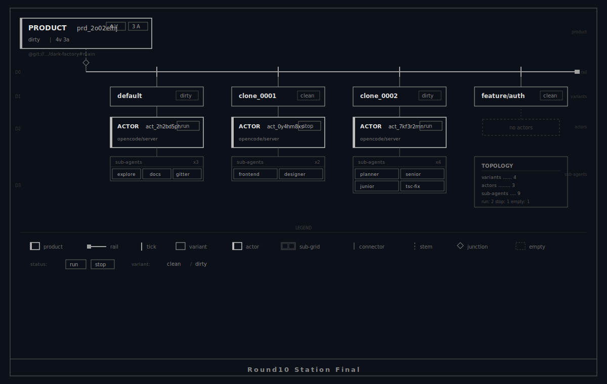
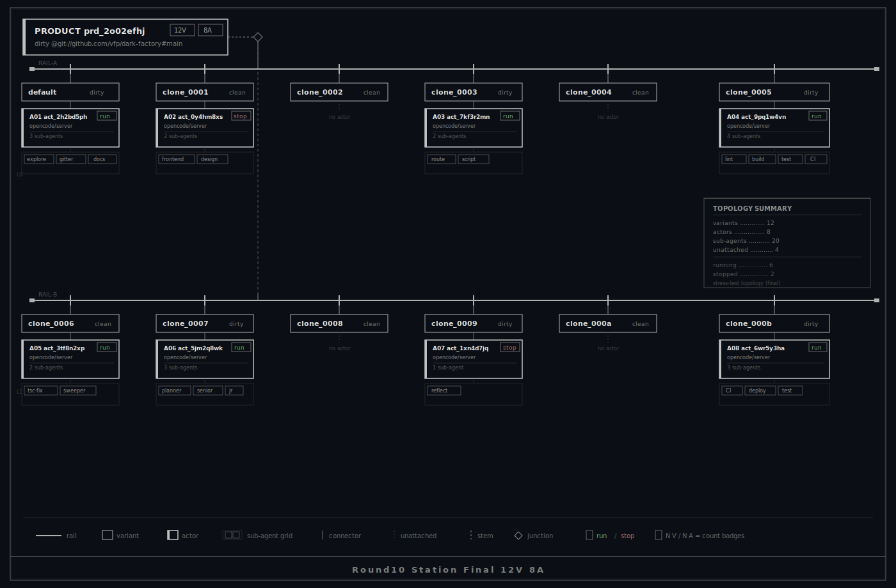
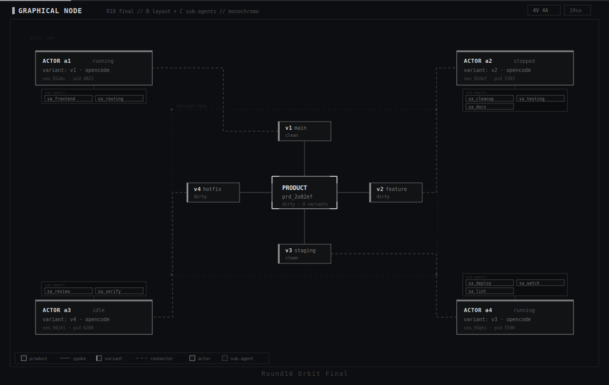
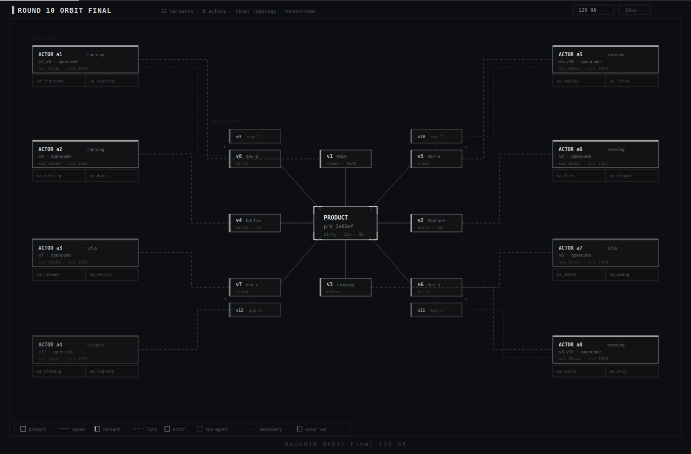

+-------------------------------------------------------------------+ | Dark Factory // Graph Node // Round 10 (Final Candidates) | | | | Station -> Graphical Tree replacement. | | Orbit -> Graphical Node replacement. | | | | Station product hugs left and spreads right. | | Sub-agents always shown as boxy grids under actors. | +-------------------------------------------------------------------+
--- STATION FINAL ---
Round10 Station Final Base (12v+12a)
Vote: station-final keep / tweak
Round10 Station Final 12v8a
Vote: station-final-12v8a keep / tweak
--- ORBIT FINAL ---
Round10 Orbit Final Base (12v+12a)
Vote: orbit-final keep / tweak
Round10 Orbit Final 12v8a
Vote: orbit-final-12v8a keep / tweak
Files: docs/reports/graph-node-round10-*.svg